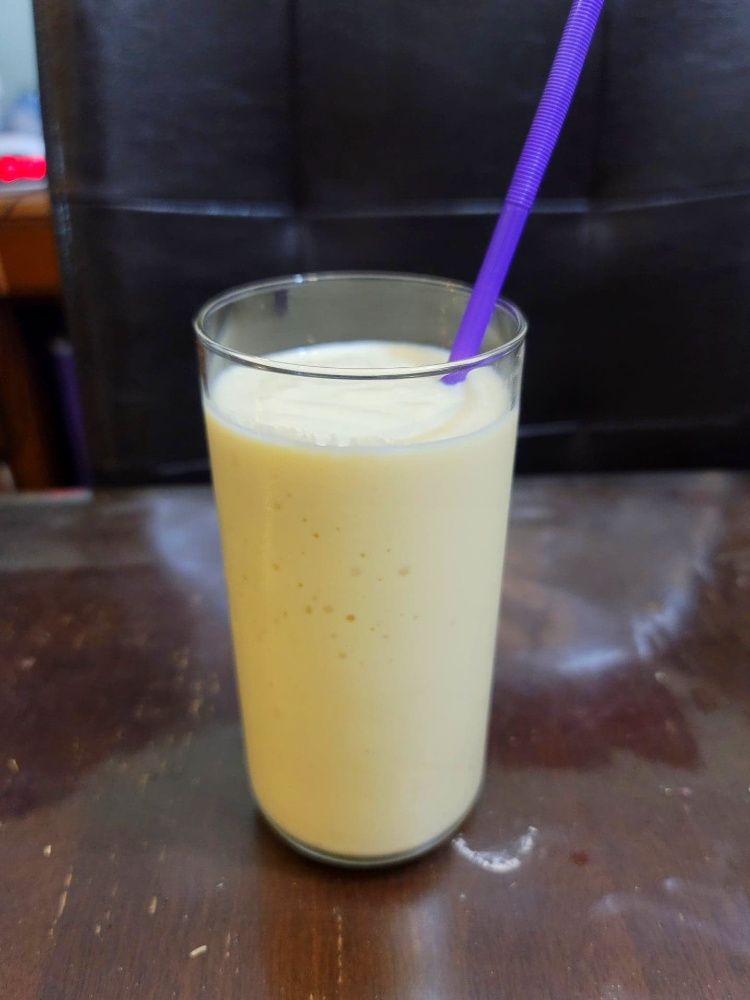

Sinh Tố Sầu Riêng (Durian Shake)

Ingredients:
200 g Durian flesh
1/4 cup Milk
100 g Ice
4 tbsp Condensed milk, or to taste
Instructions:
Combine ingredients into a blender and blend until smooth. Serve cold.